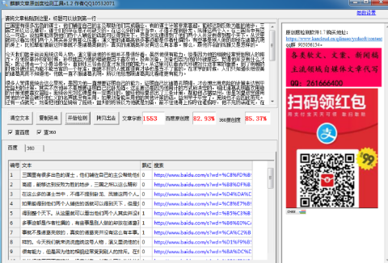

《三国演义》中才能不凡的凤雏，他是因为什么而死的呢？
《三国演义》里有很多出色的谋士，他们辅佐自己的主公帮助他们完成霸业，有的谋士计策非常高超，能够达到反败为胜的地步，三国之所以这么精彩，谋士们的存在是不可缺少的。在这么多的谋士当中，不得不提到卧龙、凤雏这两个人。在三国当中有这么一句话，说如果能得到他们两个人辅佐的话就可以得到天下，但是刘玄德得到了他们两个人并没有得到整个天下。从这里就可以看出他们两个人其实并没有那么厉害，演义里的诸葛亮很多事迹都是作者杜撰的，有些事是别人做的却放在诸葛孔明的身上，比如草船借箭这件事就不是诸葛亮做的，真实的诸葛亮并没有这么有本事。那么，跟他齐名的凤雏又是怎样的。
今天我们就来说说庞统这号人物，演义里说他的长相并不是很好看，虽然他很有能力，但是因为他的相貌经常受到别人的排斥。在他投靠孙权的时候，孙权就因为他的相貌原因不喜欢他。投奔刘备，刘备也因为他的外貌原因，觉得他并没有什么才能，就让他去一个小县当县令，直到张三爷去巡查才发现他的能力。从这里可以看古代外貌对仕途非常的重要，到了明朝的时候外貌还成为能不能当官的一个标准，面貌不好的人就算很有才华也是当不了官的。在求学的时候，人们只知道长相俊美的诸葛亮而不知道他，他就一直不服诸葛孔明，所以他总想跟诸葛亮比看谁更有能力。
很多人觉得庞统会这么早死，是因为他一直想要证明自己的能力，证明自己比诸葛孔明强，才会想出用危险的计策来达到平定益州的计策，其实不然他并不是想要证明自己比卧龙强。这主要还是因为他用计的方式所决定的，相比诸葛孔明喜欢用稳的计策他更喜欢冒险。庞统会死刘玄德是有一定责任的，曾经他给皇叔出了三条计策，帮助他占据益州，但是刘皇叔觉得用其他的计策会破坏他仁义的名声就没有采用，如果刘备能采用他的其他计策的话，益州早于平定了，庞统也不会因此而死。还有一点就死，刘备把他的坐骑给了庞统，益州的将领以为他就是刘备，箭不往他身上招呼往谁招呼，他不死的话谁死，在战场上装备越独特死得越早，可以说庞统的死他是有一点责任。
还的人说庞统会死，是因为他故意想死的，想要为自己的主公创造攻打益州的借口。古代要想发动战争名义占着很大的地位，如果没有好的借口的话，发动战争是很容易被其他势力指责的，对军队士气也影响非常大。刘备身为益州州牧刘璋的同宗，在没有借口的情况下，侵占他的地盘是非常不仁义的，所以他想要用自己的死换来刘备攻打益州的借口。很多人对这个说法嗤之以鼻，那个时候已经不像春秋战国那样发动战争前都先要找个借口顾忌礼仪，而且当时天下的势力也没有几家了，曹孙两家都处在敌对的状态，不太可能联合起来对付刘备，再说了刘备攻打益州已经找了一个很好的借口，这个借口就是益州请他帮忙抵抗张鲁竟然不给粮草了，他就借着这个借口攻打了益州。所以说，凤雏是想要自己去送死的说法是荒唐的。
庞统会死主要还是被刘备给害死的，一个军师就算计策再厉害的话也是没有用，主要是看君主会不会采用计策，如果君主没有魄力用的话，那也是没有用的。刘皇叔为了自己的仁义不采用他的其他计策，是害死他的原因之一。当时很多出名的谋士就是被自己的主公给害死的，像陈宫、李儒、田丰这些人就是这样。当时董卓进入了洛阳，掌控着大权，就慢慢不听从李儒计策，要是听的话还有其他人什么事。袁绍明明可以依靠四个州慢慢耗死曹孟德，偏偏不听从田丰的计策，要跟曹操决战。吕布不听陈公台的计策错失了好几次杀死曹操的机会。
小编认为庞士元之所以会死主要是因为自己造成，他喜欢用比较险的计策，这样的计策是有一定冒险程度的，谁也不知道结果会怎样。还有是因为刘备造成的，庞统的死刘备是有一定责任的，他太过于在乎自己的名声，不想采用其他的计策，结果导致了庞统的死亡。凤雏的死对蜀汉来说是一个非常大的损失，如果他没有死的话，蜀汉是很有机会得到整个天下的。
